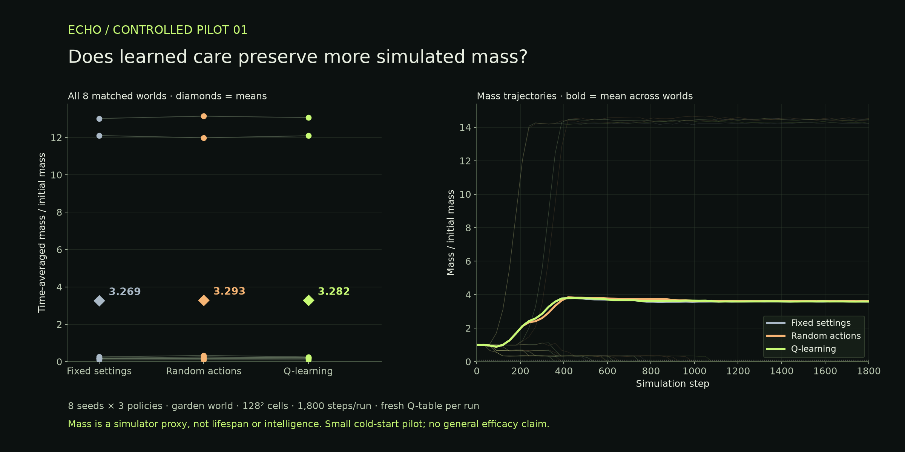

ARTIFICIAL LIFE / PERSISTENT MEMORY
Life leaves a trace.
Observe a tiny world. Change its environment. Save what happens next.
It changes as you watch.
Save it. Come back. Continue.
An experiment you can share.
RESEARCH LOG / PILOT 01
Does learned care actually help?
In this small cold-start test, the learning caretaker showed no consistent advantage over fixed settings or random actions. Publishing the result is part of the experiment.

What we observed
Q-learning’s mean mass score was 0.41% higher than fixed settings and 0.32% lower than random actions. All three policies reached sustained decline in the same 6 of 8 worlds.
Two expanding worlds dominate the averages. More simulated mass does not necessarily mean more interesting structure, longer life, or greater intelligence.
What this leaves open
Each caretaker started with an empty Q-table and received only 8 feedback updates. Longer training and evaluation on unseen worlds remain proposed experiments.
The benchmark uses the garden preset and matched seeds. Your live session above is an interactive demonstration, not a repeat of that controlled test.
Read the measurement definitions
The primary score is the time average of simulated mass divided by its initial value, using samples every 30 steps. Sustained decline is detected after 10 consecutive samples below 10% of initial mass. This is a field-level proxy, not organism lifespan. One extra fixed-policy repeat matched the original measurements on the same device.
PROJECT STATUS
A working experiment, with open questions.
Available now: live simulation, an experimental learning caretaker, local checkpoints, and world export/import. A token launch is planned via Pons on Robinhood Chain. No verified token address is listed here yet. The token does not currently control the simulation.
WHAT IS ECHO?
A world that changes.
A record that remains.
ECHO combines a Lenia-based artificial-life simulation with an experimental reinforcement-learning caretaker. The caretaker observes mass and energy, tries environmental changes, and updates a small Q-table from the outcome.
Memory means saved simulation state, learned caretaker values, and an event journal. The simulated cells do not have language, personal memories, or demonstrated consciousness. Survival and complexity are not guaranteed.
Built on Genesis Engine by teknium1 · MIT license. ECHO adds the interface, caretaker, and local memory. The simulation has no wallet connection or on-chain behavior.
Your world stays on your device.
Saved worlds use this browser’s local storage. Export a world before switching devices or clearing browser data. Closing the page stops the simulation. This app adds no analytics or advertising trackers; the hosting provider may process standard access logs.